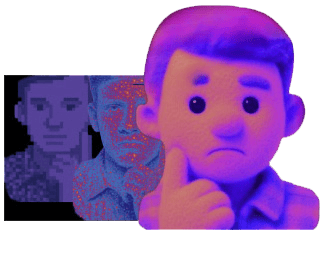

We Embrace being mistaken, as success for us is Dealing with the Unknown as a value.
Which simply expose anyone "There is a lot" claiming they are Expert, at the same time the senior's, Founders that are not embracing and transforming with AI are expired, That's why we become Radical skepticism and cognitive elasticity, We Dont hide truths, if the client doesn't match the needed we will tell them, and this might make them look for us as a Risk Mitigation or Snitchy partner, They choose
we are in "Trust Deficit" status, caused by The Disbelieving of DM's and Dishonesty from other agencies, and It Didn't stopped there, we also in "trust recession" Times caused by the explosion of AI-generated content. Consumers become skeptical and overwhelmed, they no longer buy from brands that simply promote; they buy from brands they believe in.
Not for how many agents we used or Automation, Same for us, we are open to work with Zero Ai or agents, and this might applied in any needed workflows and outcomes
No Love or Forced Client preferences), as we get paid when the customer collect.
Well, Which Top Notch enterprise did!! We Learned by doing the wrong many times and make it Phenomenal, not by avoiding do it again, We Master working with assumptions and ambiguities, We're not a newcomer to complex, Multi-Dimensional Workflows or systems — we're just extending our experience into the "Now Future"
and yes it becomes a proffision, Just open one of the platforms.
Agents Solve PhD Math equation but not real-world
if logic or business workflow is messy, the agent doesn't fix it; it just automates the mess.
88% of companies have adopted AI,
only about 1 in 5 ROI. Gartner
vulnerable to cancellation due to poor ROI clarity and risk management burden
the hype and the gap between marketing and reality, The enterprise market is heavily saturated with what analysts are now calling "agentwashing"—vendors taking rigidly programmed, predefined workflow wrappers and rebranding them as "autonomous agents."
blaming the user's rather than its own fragile architecture, adding layers of "agentic" middleware just introduces latency and degradation.
This is perhaps the most destructive aspect of the current hype cycle, A Noise, no single source of truth, anyone can twist the terms", The Puffed and fake industry Cluster, make the Client Almost Rigid and Static, they are in Requirements, Pains, chaos, with No trust-worthy validation
The Ai is weren't created to help us in life, and let us do our work easier!
It's here to generate more money, for Continuous innovation, transforming Complexity to Context, Data to Decision, Decision to Money, Money to intelligence, then starting over again
Good. Skeptics make the best clients.